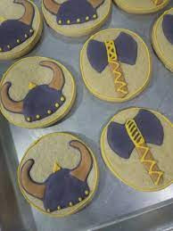
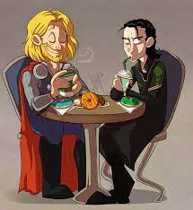

Thor
Mjolnir's Hammer Sugar Cookies:
 
Ingredients: For the Sugar Cookies:
- 2 ½ cups all-purpose flour
- 1 cup unsalted butter, softened
- 1 cup granulated sugar
- 1 large egg
- 1 teaspoon vanilla extract
- ½ teaspoon salt
For Decorating:
- Royal icing (gray and silver)
- Edible silver or metallic powder
- Small paintbrush
- Piping bags or plastic squeeze bottles
Instructions:
- Prepare the Sugar Cookie Dough:
- In a bowl, cream together the softened butter and granulated sugar until light and fluffy.
- Add the egg and vanilla extract, and mix until well combined.
- Gradually add the flour and salt, mixing until the dough comes together.
- Divide the dough into two equal portions, shape them into discs, wrap in plastic wrap, and refrigerate for at least 1 hour.
- Roll and Cut the Cookie Shapes:
- Preheat your oven to 350°F (175°C) and line a baking sheet with parchment paper.
- Take one of the chilled dough discs and roll it out on a floured surface to about ¼-inch thickness.
- Use a hammer-shaped cookie cutter (or carefully cut the shape freehand with a knife) to cut out the Mjolnir hammer shapes from the dough.
- Transfer the cookie shapes to the prepared baking sheet, leaving a little space between each.
- Bake the Cookies:
- Bake the cookies in the preheated oven for about 10-12 minutes, or until the edges are lightly golden.
- Remove from the oven and let the cookies cool on the baking sheet for a few minutes before transferring them to a wire rack to cool completely.
- Decorate the Mjolnir Cookies:
- Prepare your gray and silver royal icing. Use the gray icing to outline the hammer shape and create the handle of Mjolnir on the cookies.
- Fill in the outline with gray icing, using a toothpick or small skewer to spread it evenly.
- While the icing is still wet, dust the surface of the gray icing with a bit of edible silver or metallic powder to give it a metallic shine.
- Use the silver royal icing to add finer details, such as the cracks and patterns on the hammer.
- Let the icing dry and set completely before handling or serving.
- Serve and Enjoy:
- Once the icing has dried and set, your Mjolnir's Hammer Sugar Cookies are ready to be enjoyed!
- Serve them at parties, gatherings, or just as a delicious treat while feeling the power of Thor's hammer in your hands.
---These Mjolnir-inspired sugar cookies are not only tasty but also a delightful nod to the mighty Thor. Enjoy the creative baking process and share the sweetness with your friends and family!
About Thor -I am God of Thunder